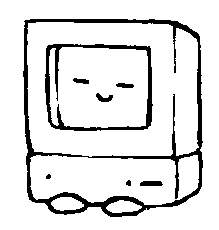
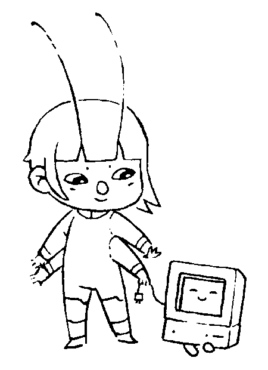

The correctness of the final result depends on nothing having touched R0 in between SUB and DIV. In the stack version, OVR copies the value to the top so it can be used twice, there is no name holding the reference open.
A programming language without names
A binding error happens when a name outlives its value or when a reference is shared between two things that should not have shared it, like when a variable initialized in one context is read in another.
char *buf = malloc(64); free(buf); buf[0] = 'x';

The majority of what we call progress and think of as the signs of a good programming language(garbage collection, borrow checkers, static analysis, null safety..) seems like the side-effects of managing the fallout from the decision to name things. So let's not even go there.
MOV R0, 12 MOV R1, 34 SUB R2, R1, R0 ( uh oh ) DIV R3, R0, R2
#12 #34 OVR SUB DIV
In stack machine assembly there are no variables, no registers, no scope and no environment, unlike other languages where linearity is enforced by tooling and runtime checks, aliasing is altogether not expressible in the model. The consequence is that the entire family of bugs caused by names cannot be written.
I. Programming without names
Lacking named variables, the natural description of a word's behavior is its effect on the stack. Type inference in Uxntal is done by checking the stack effect declarations of words, against the sum of stack changes predicted to occur based on the arity of each token in their bodies:
@add ( a* b* -: c* ) Warning: Imbalance in @add of +2 DUP2 ADD2 JMP2r
The system extends naturally to branching. Each branch of a conditional must produce the same stack effect as the other, words that fail to balance generate a warning, which catches a meaningful proportion of invalid programs:
@routine ( a b -: c ) Warning: Imbalance in @routine of +1 EQUk ?&sub-routine POP2 #0a JMP2r &sub-routine ( a b -: c* ) POP2 #000b JMP2r
This is a very basic and permissive type system by the standards of academic type theory, but it is the type system that fits a machine whose defining property is the absence of names. It takes minutes to understand, seconds to check, and costs nothing at runtime.
II. Algebraic Reduction
Because operations have no hidden dependencies through variable names, sequences of stack operations can be reasoned about purely algebraically. Any permutation that produces the same stack transformation as another is a valid rewrite. This makes a class of optimizations mechanical. Redundant permutations collapse to simpler ones, for example:
#12 #34 SWP POP -> NIP
Tail-call optimization happen where jumps to subroutines are followed by subroutine returns and can be replaced instead by a single jump:
@routine ( a b -: c ) SWP ;function JSR2 JMP2r -> JMP2
Going one step further, routines that would otherwise terminate in a tail-call could even be relocated before their tail's location in memory and do away with the ending jump altogether. We leave here a comment marker to indicate to the stack-effect checker that the routine's tail will fall-through.
@routine ( a b -: c ) SWP ;function JMP2 -> ( >> ) @function ( b a -: c ) DIV JMP2r
What makes these rewrites reliable is precisely the absence of names. In a language with variables, any of these transformations might be invalid because a name could introduce a dependency invisible to the optimizer. When there are no names there are no invisible dependencies. The sequence of operations is all there is, and what can be said about it algebraically is everything that can be said about it.
